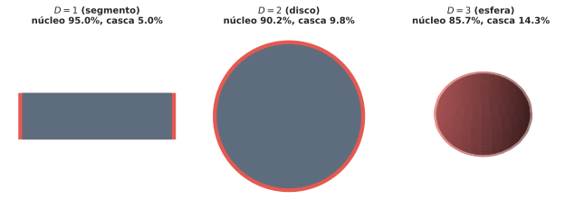
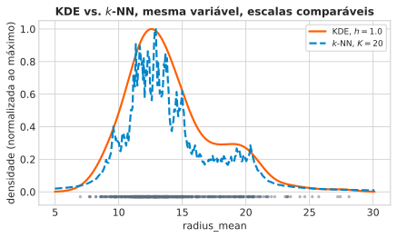
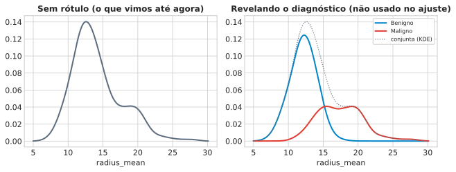

1 Abertura — O Que Fazer Sem Forma Paramétrica, e Sem \(N \gg d\)
A Aula 1 fez uma aposta específica: assumir que os dados vêm de uma Gaussiana multivariada, ajustá-la por máxima verossimilhança, e usar a distância de Mahalanobis para decidir o que é típico. Essa aposta tinha uma ressalva anunciada, mas não resolvida: \(\hat\Sigma\) só é invertível se \(N > d\) — e o ajuste piora conforme \(d\) cresce, mesmo quando \(N > d\) tecnicamente vale.
Esta aula puxa esse fio até o fim, respondendo duas perguntas:
Por que exatamente “espaço de alta dimensão” é um problema geométrico — não só um problema de contar parâmetros de \(\Sigma\)?
Se não quisermos mais assumir nenhuma forma funcional para \(p(\mathbf{x})\) — nem Gaussiana, nem nenhuma outra família —, como estimar densidade deixando os dados “falarem por si”?
A resposta à segunda pergunta vem em duas versões-espelho — \(k\)-vizinhos- mais-próximos e estimação de densidade por kernel (KDE) — que são, como veremos, a mesma ideia vista de dois lados opostos.
NotaO plano desta aula
Por que a intuição geométrica de baixa dimensão falha em alta dimensão (maldição da dimensionalidade).
Um resultado geral, \(p(\mathbf{x})=K/(NV)\), que unifica os dois métodos não-paramétricos que veremos.
\(k\)-vizinhos-mais-próximos e KDE, cada um explorando esse resultado de um lado diferente.
Por que nenhum dos dois é “imune” à maldição — e uma ponte para a Aula 3.
2 A Maldição da Dimensionalidade, Geometricamente
Antes de qualquer estimador, uma pergunta mais básica: por que exatamente “muitas dimensões” é um problema? A resposta, em duas partes, vem de dois livros diferentes — convergindo na mesma conclusão por caminhos distintos.
2.1 Volume que se esconde na casca
Bishop (PRML, §1.4) começa pelo problema mais ingênuo: dividir cada variável em \(M\) células e contar pontos por célula.
“Another major limitation of the histogram approach is its scaling with dimensionality. If we divide each variable in a D-dimensional space into M bins, then the total number of bins will be \(M^D\). This exponential scaling with D is an example of the curse of dimensionality.” (p. 121)
Mas o resultado mais surpreendente de PRML não é sobre células — é sobre onde mora o volume de uma esfera em alta dimensão:
“consider a sphere of radius r = 1 in a space of D dimensions, and ask what is the fraction of the volume of the sphere that lies between radius \(r=1-\epsilon\) and \(r=1\). […] the volume of a sphere of radius r in D dimensions must scale as \(r^D\) […] Thus the required fraction is given by \(\dfrac{V_D(1)-V_D(1-\epsilon)}{V_D(1)} = 1-(1-\epsilon)^D\) […] for large D, this fraction tends to 1 even for small values of \(\epsilon\). Thus, in spaces of high dimensionality, most of the volume of a sphere is concentrated in a thin shell near the surface!” (pp. 36–37)
epsilon =0.05for D in [1, 2, 5, 10, 30, 100]: frac =1- (1- epsilon) ** Dprint(f"D={D:3d}: fração do volume na casca de espessura ε=0.05 ≈ {frac:.3f}")
D= 1: fração do volume na casca de espessura ε=0.05 ≈ 0.050
D= 2: fração do volume na casca de espessura ε=0.05 ≈ 0.098
D= 5: fração do volume na casca de espessura ε=0.05 ≈ 0.226
D= 10: fração do volume na casca de espessura ε=0.05 ≈ 0.401
D= 30: fração do volume na casca de espessura ε=0.05 ≈ 0.785
D=100: fração do volume na casca de espessura ε=0.05 ≈ 0.994
Em \(D=100\), praticamente 100% do volume de uma esfera mora nos últimos 5% do raio. A intuição de “o centro concentra a massa” — válida em 1, 2 ou 3 dimensões — se inverte por completo.
“consider the behaviour of a Gaussian distribution in a high- dimensional space. […] we see that for large D the probability mass of the Gaussian is concentrated in a thin shell.” (PRML, p. 37)
O mesmo vale para uma Gaussiana: a massa de probabilidade se afasta da média e se acumula numa casca fina — nem perto do centro, nem espalhada uniformemente.

2.2 O mesmo efeito, do ponto de vista de um vizinho mais próximo
O ESL (Hastie, Tibshirani & Friedman, §2.5 “Local Methods in High Dimensions”) chega à mesma conclusão por um caminho mais concreto, pensando diretamente em vizinhança:
“Suppose we send out a hypercubical neighborhood about a target point to capture a fraction r of the observations. […] the expected edge length will be \(e_p(r) = r^{1/p}\). In ten dimensions \(e_{10}(0.01) =
0.63\) and \(e_{10}(0.1) = 0.80\), while the entire range for each input is only 1.0. So to capture 1% or 10% of the data to form a local average, we must cover 63% or 80% of the range of each input variable. Such neighborhoods are no longer ‘local.’” (p. 22)
for p in [1, 2, 10, 30]: e10 =0.10** (1/ p)print(f"p={p:3d}: para capturar 10% dos dados, cobrir {e10:.2%} da amplitude de cada eixo")
p= 1: para capturar 10% dos dados, cobrir 10.00% da amplitude de cada eixo
p= 2: para capturar 10% dos dados, cobrir 31.62% da amplitude de cada eixo
p= 10: para capturar 10% dos dados, cobrir 79.43% da amplitude de cada eixo
p= 30: para capturar 10% dos dados, cobrir 92.61% da amplitude de cada eixo
Em \(p=30\), é preciso cobrir 93% da amplitude de cada variável só para capturar 10% dos dados — a vizinhança deixou de ser local há muito tempo. O segundo resultado do ESL é ainda mais direto:
“The median distance from the origin to the closest data point is given by the expression \(d(p,N) = \big(1-(1/2)^{1/N}\big)^{1/p}\) […]. For N = 500, p = 10, \(d(p,N)\approx 0.52\), more than halfway to the boundary. Hence most data points are closer to the boundary of the sample space than to any other data point.” (pp. 22–23)
Isso quer dizer que, com \(N=500\) pontos uniformes numa bola unitária de \(D=10\) dimensões, o ponto mais próximo da origem está, em mediana, a mais da metade do caminho até a borda — mais perto da fronteira do espaço do que de qualquer outro ponto de dado.
2.3 Consequência: distâncias deixam de discriminar
Os dois resultados acima — volume na casca, vizinhos perto da borda — apontam para o mesmo problema prático: em alta dimensão, a noção de “vizinho próximo” fica cada vez menos informativa, porque todo mundo fica a distâncias parecidas de todo mundo. Uma forma direta de medir isso é o contraste relativo: fixe um ponto de consulta, calcule a distância a todos os outros pontos, e compare a distância mínima com a máxima, \[\text{contraste} = \frac{\text{dist}_{\max}-\text{dist}_{\min}}{\text{dist}_{\min}}.\] Se esse contraste é grande, “o vizinho mais próximo” é um conceito com significado — está bem mais perto que o ponto mais distante. Se o contraste desmorona para perto de zero, todo ponto está igualmente longe, e “vizinho mais próximo” deixa de ser um conceito útil.
NotaSinalização de fonte
Esta métrica específica — e a comparação \(L_1\)/\(L_2\)/Cosseno em geral — não foi encontrada em PRML, ESL nem DLFC (os três livros-texto desta disciplina) apesar de busca dedicada. É um resultado padrão da literatura de busca aproximada de vizinhos (Beyer et al., 1999; Aggarwal et al., 2001), citado aqui por atribuição de origem da ideia, não como trecho literal de um livro-fonte. A demonstração numérica a seguir é nossa, verificada por script antes de escrever esta aula — o mesmo tratamento já dado ao resultado \(\chi^2_d\) da Aula 1.
Aplicando essa medida ao próprio Breast Cancer Wisconsin (padronizado), sorteando aleatoriamente \(d\) das 30 colunas disponíveis:
for d in [2, 5, 10, 20, 30]: media, desvio = relative_contrast(X_std, d)print(f"d={d:2d} contraste relativo médio = {media:6.2f} (desvio {desvio:.2f})")
O contraste relativo desmorona de \(\approx 220\) (2 atributos) para \(\approx 10\) (30 atributos) — num dado real, não simulado. Não é só teoria de livro: a maldição da dimensionalidade aparece exatamente neste dataset, com estes 30 atributos de exame clínico.
ImportantePergunta
DicaSe distâncias deixam de discriminar em alta dimensão, o que isso quebra primeiro: um classificador ou um estimador de densidade?
Julgue V ou F — a questão só conta se acertar os 4 itens:
Se a distância entre o ponto de consulta e seu vizinho mais próximo, e a distância até o ponto mais distante, convergem para o mesmo valor conforme \(d\) cresce, então a ordem dos \(k\) vizinhos mais próximos de um ponto se torna cada vez mais sensível a perturbações minúsculas nos dados.
No limite em que o contraste relativo é exatamente zero, todo subconjunto de \(k\) pontos escolhido por proximidade é, na prática, uma escolha tão informativa quanto um subconjunto de \(k\) pontos escolhido aleatoriamente.
Se um dataset tem 30 atributos mas apenas 3 deles carregam informação relevante (os outros 27 são ruído independente da variável de interesse), aumentar a dimensionalidade usada de 3 para 30 sempre melhora a qualidade da estimativa de densidade local.
A fórmula \(e_p(r) = r^{1/p}\) do ESL implica que, para qualquer \(r<1\) fixo, o comprimento de aresta necessário cresce (se aproxima de 1) conforme \(p\) aumenta.
3 Da Ideia Geral ao Estimador: \(p(\mathbf{x}) = K/(NV)\)
Se abandonamos a forma Gaussiana, o que resta? PRML propõe um caminho que começa, de novo, no histograma — mas dessa vez extraindo a lição certa dele, em vez de só o problema.
“First, to estimate the probability density at a particular location, we should consider the data points that lie within some local neighbourhood of that point. […] Second, the value of the smoothing parameter should be neither too large nor too small in order to obtain good results.” (PRML, pp. 121–122)
Formalizando essa intuição: fixe um ponto \(\mathbf{x}\) e uma região \(R\) pequena de volume \(V\) ao redor dele. A probabilidade de um ponto de treino cair em \(R\) é \(P=\int_R p(\mathbf{x})\,d\mathbf{x}\). Com \(N\) pontos de treino, o número \(K\) que cai em \(R\) segue uma binomial:
“the total number K of points that lie inside R will be distributed according to the binomial distribution […] For large N, this distribution will be sharply peaked around the mean and so \(K\simeq
NP\). If, however, we also assume that the region R is sufficiently small that the probability density \(p(\mathbf{x})\) is roughly constant over the region, then we have \(P\simeq p(\mathbf{x})V\) […] Combining […] we obtain our density estimate in the form \[p(\mathbf{x}) = \frac{K}{NV}.\]” (p. 122)
Esse resultado é o eixo de toda a aula. Ele tem uma tensão interna deliberada: \(R\) precisa ser pequeno o bastante para que \(p(\mathbf x)\) seja aproximadamente constante dentro dela, e grande o bastante para que \(K\) não seja um número tão pequeno que a binomial fique ruidosa. Nenhum valor fixo de \(V\) resolve os dois lados ao mesmo tempo em todo lugar do espaço — o que já anuncia por que precisaremos de um parâmetro de suavização em qualquer método que construamos a partir daqui.
“We can exploit this result in two different ways. Either we can fix K and determine the value of V from the data, which gives rise to the K-nearest-neighbour technique […], or we can fix V and determine K from the data, giving rise to the kernel approach.” (PRML, p. 123)
Os dois métodos que vemos a seguir não são “duas técnicas parecidas” — são a mesma identidade matemática, explorada de dois lados opostos.
4\(k\)-Vizinhos-Mais-Próximos Para Densidade
Primeira rota: fixar \(K\), e deixar os dados determinarem \(V\).
“instead of fixing V and determining the value of K from the data, we consider a fixed value of K and use the data to find an appropriate value for V. To do this, we consider a small sphere centred on the point x […] and we allow the radius of the sphere to grow until it contains precisely K data points. The estimate of the density \(p(x)\) is then given by [K/(NV)] with V set to the volume of the resulting sphere. This technique is known as K nearest neighbours.” (PRML, pp. 124–125)
Chame de \(d_K(\mathbf{x})\) o raio dessa esfera — a distância ao \(K\)-ésimo vizinho mais próximo. Como o volume de uma esfera de raio \(r\) em \(D\) dimensões escala como \(r^D\) (a mesma identidade do Bloco 2, eq. 1.75 de PRML), temos \(V \propto d_K(\mathbf{x})^D\). Substituindo em \(p(\mathbf{x})=K/(NV)\): \[p(\mathbf{x}) \;\propto\; \frac{1}{d_K(\mathbf{x})^D}\]
Esse é o resultado central do index.qmd desta disciplina para esta aula. A leitura é direta: ponto num bairro denso → \(K\) vizinhos estão próximos → \(d_K\) pequeno → densidade estimada alta. Ponto isolado → \(d_K\) grande → densidade baixa. \(K\) funciona como parâmetro de suavização — \(K\) pequeno é ruidoso, \(K\) grande borra estrutura real (o mesmo trade-off do Bloco 3, agora com um rosto concreto).
Aplicando isso a radius_mean do Breast Cancer Wisconsin, em três pontos-teste e três valores de \(K\):
for K in [5, 20, 50]:for x0 in [12.0, 17.5, 25.0]: dens = knn_density_1d(np.array([x0]), x_radius, K)[0]print(f"K={K:3d} x0={x0:5.1f} densidade estimada ≈ {dens:.4f}")print()
K= 5 x0= 12.0 densidade estimada ≈ 0.1098
K= 5 x0= 17.5 densidade estimada ≈ 0.0549
K= 5 x0= 25.0 densidade estimada ≈ 0.0029
K= 20 x0= 12.0 densidade estimada ≈ 0.1598
K= 20 x0= 17.5 densidade estimada ≈ 0.0399
K= 20 x0= 25.0 densidade estimada ≈ 0.0046
K= 50 x0= 12.0 densidade estimada ≈ 0.1515
K= 50 x0= 17.5 densidade estimada ≈ 0.0382
K= 50 x0= 25.0 densidade estimada ≈ 0.0083
Note o rug plot (traços cinzas no eixo x): as duas concentrações de pontos visíveis já sugerem que radius_mean não é unimodal — vamos voltar a isso no Bloco 6.
AvisoAviso: isto não é uma densidade de verdade
“Note that the model produced by K nearest neighbours is not a true density model because the integral over all space diverges.” (PRML, p. 125)
A cauda de \(1/d_K(\mathbf{x})^D\) não decai rápido o bastante para que a integral sobre todo o espaço convirja para 1. Isso não invalida o uso de \(k\)-NN como score de densidade relativa (comparar pontos entre si) — mas quer dizer que não se deve tratar o número produzido como uma probabilidade calibrada.
5 Do Histograma ao Kernel Suave: KDE
Segunda rota: fixar \(V\), e contar quantos pontos \(K\) caem dentro. PRML começa com a versão mais simples de \(V\) fixo — um hipercubo — via a chamada janela de Parzen:
“we take the region R to be a small hypercube centred on the point x […] \(k(u)=1\) if \(|u_i|\le 1/2\) for \(i=1,\dots,D\), 0 otherwise […] The total number of data points lying inside this cube will therefore be \(K=\sum_n k\big((\mathbf{x}-\mathbf{x}_n)/h\big)\). Substituting this expression […] gives […] \(p(\mathbf{x}) = \frac{1}{N}\sum_n
\frac{1}{h^D} k\big(\frac{\mathbf{x}-\mathbf{x}_n}{h}\big)\).” (p. 123)
O problema dessa janela dura (hipercubo) é o mesmo do histograma: descontinuidades artificiais nas bordas do cubo.
“We can obtain a smoother density model if we choose a smoother kernel function, and a common choice is the Gaussian […] \[p(\mathbf{x}) = \frac{1}{N}\sum_{n=1}^N \frac{1}{(2\pi h^2)^{1/2}}
\exp\left(-\frac{\|\mathbf{x}-\mathbf{x}_n\|^2}{2h^2}\right)\] where h represents the standard deviation of the Gaussian components.” (p. 124)
Em palavras: coloque uma gaussiana de largura \(h\) sobre cada ponto de treino, some todas, divida por \(N\). \(h\) é o parâmetro de suavização — o mesmo papel que \(K\) desempenhava no Bloco 4, e que \(\Delta\) (largura de bin) desempenhava no histograma.
“We see that, as expected, the parameter h plays the role of a smoothing parameter, and there is a trade-off between sensitivity to noise at small h and over-smoothing at large h.” (PRML, p. 124)
Verificando isso em radius_mean, contando picos (máximos locais) da densidade estimada para três larguras de banda:
grid = np.linspace(x_radius.min() -2, x_radius.max() +2, 400)for h in [0.3, 1.0, 3.0]: dens = gaussian_kde_1d(grid, x_radius, h) picos = ((dens[1:-1] > dens[:-2]) & (dens[1:-1] > dens[2:])).sum()print(f"h={h:.1f}: {picos:2d} picos detectados, densidade máxima {dens.max():.4f}")
h=0.3: 12 picos detectados, densidade máxima 0.1541
h=1.0: 3 picos detectados, densidade máxima 0.1403
h=3.0: 1 picos detectados, densidade máxima 0.0913
\(h=0.3\) (pequeno demais) produz 12 picos espúrios — ruído, não estrutura real. \(h=3.0\) (grande demais) produz 1 pico só — borra qualquer estrutura que exista. \(h=1.0\) mostra 3 picos: candidato mais plausível a capturar algo real, sem exagerar no ruído. Voltaremos a essa estrutura de 3 picos no Bloco 6.
NotaO que muda de nome, mas não de ideia
O mesmo parâmetro de suavização, três disfarces
No histograma
No \(k\)-NN (Bloco 4)
No KDE (aqui)
largura do bin \(\Delta\)
número de vizinhos \(K\)
largura do kernel \(h\)
6\(k\)-NN vs. KDE, Lado a Lado, no Dado Real
Os Blocos 4 e 5 construíram a mesma identidade \(p(\mathbf{x})=K/(NV)\) por lados opostos. Colocando as duas melhores versões (KDE com \(h=1.0\), \(k\)-NN com \(K=20\)) uma sobre a outra:

Concordam bastante no grosso da distribuição — mas divergem exatamente onde a teoria prevê que deveriam: nas caudas. KDE tem largura de suavização fixa (\(h\) igual em toda parte); \(k\)-NN tem largura adaptativa (\(d_K\) encolhe onde há muitos pontos, cresce onde há poucos). Veja a diferença direta nos números já calculados no Bloco 4:
for x0 in [12.0, 25.0]:for K in [5, 20, 50]: dK = knn_density_1d(np.array([x0]), x_radius, K) tree = cKDTree(x_radius.reshape(-1, 1)) dist, _ = tree.query([[x0]], k=K)print(f"x0={x0:5.1f} K={K:3d} d_K={dist[0, -1]:.3f}")
Em \(x_0=12\) (região densa), \(d_K\) cresce muito pouco entre \(K=5\) e \(K=50\) — a janela quase não precisa se abrir. Em \(x_0=25\) (cauda, poucos pontos), \(d_K\) cresce muito mais rápido — a janela precisa se abrir bastante para achar \(K\) vizinhos. O KDE, com \(h\) fixo, não tem esse ajuste: usa a mesma largura nos dois lugares, mesmo que um deles tenha muito menos dados por perto.
6.1 O que a estrutura de 3 picos realmente é
O Bloco 5 encontrou 3 picos com \(h=1.0\). O que são, de fato?

O rótulo de diagnóstico — nunca usado em nenhum dos ajustes acima — explica a estrutura: os tumores benignos têm radius_mean médio \(\approx 12{,}1\), os malignos \(\approx 17{,}5\). O KDE e o \(k\)-NN, sem ver rótulo nenhum, já haviam capturado essa mistura de duas subpopulações na forma da densidade estimada. Isso é exatamente o tipo de achado que motiva aprendizado não supervisionado: a estrutura estava lá, mesmo sem ninguém apontar para ela.
6.2 Nenhum dos dois escapa da maldição
Voltando ao Bloco 2: tanto \(k\)-NN quanto KDE são não-paramétricos, mas não são imunes à maldição da dimensionalidade — só falham de um jeito diferente do paramétrico:
“As discussed so far, both the K-nearest-neighbour method, and the kernel density estimator, require the entire training data set to be stored, leading to expensive computation if the data set is large.” (PRML, p. 127)
E, do ESL: a densidade amostral necessária para manter a mesma qualidade de estimativa local cresce como \(N^{1/p}\) — ou seja, para manter a mesma “cobertura local” que 100 pontos dão em 1 dimensão, seriam necessários \(100^{10}\) pontos em 10 dimensões. Nem \(k\)-NN nem KDE contornam isso — eles só não exigem, como a Gaussiana da Aula 1, que \(N > d\) para a matriz de covariância ser invertível. A maldição ainda está lá; só troca de forma.
7 Armadilhas, Custo, e Ponte Para a Aula 3
Um último contraste com a Aula 1, para fechar: o ajuste Gaussiano resume\(N\) pontos em dois números — \(\hat{\boldsymbol\mu}\) e \(\hat\Sigma\) — e depois pode descartar os dados. Nem \(k\)-NN nem KDE fazem isso:
“both the K-nearest-neighbour method, and the kernel density estimator, require the entire training data set to be stored, leading to expensive computation if the data set is large.” (PRML, p. 127)
Isso é o preço de não assumir forma nenhuma: sem uma família paramétrica para “absorver” a informação dos dados em poucos parâmetros, os dados são o modelo. Toda consulta nova precisa revisitar (uma parte de) todo o conjunto de treino.
DicaPonte para a Aula 3
A distância ao \(K\)-ésimo vizinho, \(d_K(\mathbf{x})\), que hoje serviu para estimar densidade, será reaproveitada na Aula 3 como uma métrica de densidade local para construir caminhos num grafo — a base de Clustering Hierárquico e HDBSCAN. O mesmo número, um uso novo: em vez de “quão denso é este ponto”, a pergunta vira “quais pontos formam um caminho de alta densidade entre si”.
Essa é a lição desta aula: abandonar a forma paramétrica troca um problema (a forma pode estar errada) por outro (guardar e revisitar todos os dados, e ainda sofrer a maldição da dimensionalidade de um jeito diferente). Não há almoço gratuito — só uma escolha diferente de onde pagar o preço.
8 Exercícios
8.1 Questões discursivas
A Aula 1 exigia \(N>d\) para que \(\hat\Sigma\) fosse invertível. Explique por que \(k\)-NN e KDE não têm essa mesma exigência formal — e, ainda assim, por que isso não significa que eles “resolveram” a maldição da dimensionalidade. Use os dois resultados do ESL (comprimento de aresta e densidade amostral \(\propto N^{1/p}\)) na sua resposta.
O Bloco 6 mostrou que \(k\)-NN e KDE produzem densidades estimadas parecidas no grosso da distribuição de radius_mean, mas divergem nas caudas. Explique, em termos da definição de cada método (fixar \(K\) vs. fixar \(V\)), por que é justamente nas caudas — regiões de baixa densidade — que essa divergência deveria aparecer com mais força.
Escolha uma situação prática (pode ser fora de medicina) em que usar um estimador de densidade não-paramétrico (\(k\)-NN ou KDE) seria preferível a assumir uma Gaussiana multivariada como na Aula 1 — e uma situação em que o custo de armazenar todo o conjunto de dados (Bloco 7) tornaria essa escolha impraticável. Justifique os dois casos.
8.2 Questões de Verdadeiro/Falso
Cada bloco de 4 itens trata do mesmo tema. A questão só é considerada correta se todos os 4 itens forem julgados corretamente (deixar em branco tem penalidade de 20% da nota da questão).
DicaConcentração de volume na hiperesfera
( ) Se \(\epsilon=0{,}5\) (a casca cobre metade do raio), a fração do volume de uma esfera de raio 1 contida nessa casca, em \(D=1\) dimensão, é exatamente \(0{,}5\).
( ) Para qualquer \(\epsilon\in(0,1)\) fixo, a fração do volume contida na casca de espessura \(\epsilon\) é uma função estritamente crescente de \(D\).
( ) Um argumento análogo ao da hiperesfera se aplicaria a um hipercubo de lado 1 em \(D\) dimensões: a fração do volume contida numa casca de espessura relativa \(\epsilon\) próxima da superfície do cubo também tenderia a 1 conforme \(D\to\infty\).
( ) Se a massa de probabilidade de uma Gaussiana multivariada se concentra numa casca fina afastada da média em alta dimensão, isso implica que a moda da distribuição (o ponto de densidade máxima) não é mais o ponto de \(\mathbf{x}\) onde a maior parte da massa de probabilidade está localizada.
DicaAs fórmulas do ESL (comprimento de aresta e distância mediana)
( ) Segundo \(e_p(r)=r^{1/p}\), para capturar uma fração fixa \(r<1\) dos dados, o comprimento de aresta necessário aumenta conforme \(p\) aumenta.
( ) A fórmula \(d(p,N)=(1-(1/2)^{1/N})^{1/p}\) prevê que, mantendo \(p\) fixo e aumentando \(N\) para infinito, a distância mediana ao vizinho mais próximo da origem tende a zero.
( ) Se, para \(N=500\) e \(p=10\), a distância mediana ao vizinho mais próximo da origem é \(\approx 0{,}52\) (mais da metade do raio), então, necessariamente, mais da metade dos 500 pontos está a uma distância menor que \(0{,}52\) da origem.
( ) O crescimento da densidade amostral necessária, \(N^{1/p}\), e o crescimento do comprimento de aresta necessário, \(r^{1/p}\), são dois sintomas independentes da maldição da dimensionalidade, sem relação matemática direta entre si.
DicaConcentração de medida e métricas de distância
( ) Se o contraste relativo \((\text{dist}_{\max}-\text{dist}_{\min})/\text{dist}_{\min}\) tende a zero conforme \(d\) cresce, isso implica que a distância absoluta entre pontos também tende a zero.
( ) Num dataset em que só um pequeno subconjunto dos atributos carrega informação relevante para a tarefa e o restante é ruído independente, aumentar \(d\) usando apenas os atributos informativos NÃO deveria produzir a mesma queda no contraste relativo observada ao aumentar \(d\) com atributos aleatórios (informativos + ruído).
( ) O fato de o contraste relativo cair de \(\approx 220\) (d=2) para \(\approx 10\) (d=30) no Breast Cancer Wisconsin depende da escolha específica desse dataset, e um dataset sintético com atributos i.i.d. uniformes mostraria, em geral, o oposto (contraste relativo crescente com \(d\)).
( ) Padronizar os atributos (subtrair a média, dividir pelo desvio) antes de calcular distâncias é irrelevante para o fenômeno de concentração de medida — ele ocorreria de forma idêntica mesmo sem essa padronização.
DicaO resultado geral \(p(\mathbf{x})=K/(NV)\)
( ) A derivação de \(p(\mathbf{x})=K/(NV)\) depende da suposição de que \(p(\mathbf{x})\) é aproximadamente constante dentro da região \(R\) — se essa suposição falhar (por exemplo, \(R\) grande demais numa região de densidade muito variável), a estimativa fica sistematicamente distorcida mesmo com \(N\) muito grande.
( ) A aproximação \(K\simeq NP\) é uma consequência de a distribuição binomial \(\mathrm{Bin}(K\mid N,P)\) ficar mais concentrada em torno da sua média conforme \(N\) cresce — não é uma igualdade exata para qualquer \(N\) finito.
( ) Se \(V\to 0\) mantendo \(N\) fixo, a estimativa \(K/(NV)\) tende, na prática, a ficar mais estável e menos ruidosa, porque \(R\) fica mais fiel à suposição de densidade constante.
( ) As duas rotas — fixar \(K\) e achar \(V\), ou fixar \(V\) e achar \(K\) — produzem, em geral, estimativas numericamente idênticas ponto a ponto, para o mesmo dataset e os mesmos valores nominais de “quantos pontos” ou “que tamanho de região” foram usados.
Dica\(k\)-NN para densidade
( ) A relação \(p(\mathbf{x})\propto 1/d_K(\mathbf{x})^D\) implica que, para o mesmo valor de \(d_K(\mathbf{x})\), a densidade estimada em \(D=30\) dimensões é numericamente igual à densidade estimada em \(D=2\) dimensões.
( ) Se dois pontos \(\mathbf{x}_1\) e \(\mathbf{x}_2\) têm o mesmo valor de \(d_K(\mathbf{x})\) para o mesmo \(K\), o modelo de \(k\)-NN atribui a eles a mesma densidade estimada, independentemente de quaisquer outras diferenças entre suas vizinhanças.
( ) Aumentar \(K\) de 5 para 50 num ponto na região mais densa dos dados produz uma variação relativa menor em \(d_K(\mathbf{x})\) do que a mesma variação de \(K\) produziria num ponto na cauda da distribuição.
( ) Como o \(k\)-NN não assume nenhuma forma funcional para \(p(\mathbf{x})\), ele está imune a qualquer viés sistemático — ao contrário do ajuste Gaussiano da Aula 1, que pode enviesar a estimativa se a forma verdadeira não for Gaussiana.
Dica“Isto não é uma densidade de verdade”
( ) O fato de a integral de \(p(\mathbf{x})\propto 1/d_K(\mathbf{x})^D\) sobre todo o espaço divergir é uma consequência de como a cauda dessa função decai com a distância, não um erro de implementação específico de algum software.
( ) Ainda que o modelo de \(k\)-NN não seja uma densidade normalizada, ele pode ser usado de forma válida para ordenar pontos do menos denso ao mais denso.
( ) Se o objetivo fosse calcular a probabilidade exata de um novo ponto pertencer a uma região específica do espaço (uma integral de \(p(\mathbf{x})\) sobre essa região), o modelo de \(k\)-NN, sem modificação, forneceria essa probabilidade corretamente.
( ) Normalizar a saída do \(k\)-NN dividindo pelo seu valor máximo observado no conjunto de teste resolve, por si só, o problema da integral divergente e produz uma densidade de probabilidade válida.
DicaJanela de Parzen e kernel gaussiano
( ) A janela de Parzen (hipercubo) e o kernel gaussiano produzem a mesma estimativa de densidade sempre que \(h\) é escolhido de forma equivalente nos dois casos, porque ambos implementam exatamente a mesma função de peso.
( ) Um ponto de treino localizado exatamente na borda de um hipercubo de largura \(h\) centrado num ponto de consulta \(\mathbf{x}\) pode contar ou não para \(K\), dependendo de detalhes de borda (inclusão estrita ou não) que não têm análogo no kernel gaussiano, que atribui peso positivo (ainda que pequeno) a qualquer distância finita.
( ) As condições \(k(u)\ge 0\) e \(\int k(u)\,du=1\) (PRML, eq. 2.251– 2.252) seriam violadas por um kernel gaussiano com \(h\) negativo, mas não por nenhuma outra escolha razoável de \(h>0\).
( ) Trocar o kernel gaussiano por um kernel uniforme (janela dura) de mesma largura \(h\) elimina completamente a possibilidade de descontinuidades na densidade estimada.
Dica\(h\) como parâmetro de suavização
( ) No limite \(h\to 0^+\), cada ponto de treino distinto se torna, ele mesmo, um pico isolado da densidade estimada — no limite, até \(N\) picos, um por ponto de treino.
( ) Se dois datasets diferentes têm o mesmo número de pontos \(N\) mas escalas muito diferentes (um varia entre 0 e 1, outro entre 0 e 1000), usar o mesmo valor absoluto de \(h\) para os dois produzirá, em geral, graus de suavização relativa muito diferentes.
( ) O trade-off entre \(h\) pequeno (ruidoso) e \(h\) grande (borrado) é conceitualmente o mesmo trade-off entre viés e variância discutido em outros contextos de ajuste de modelo — \(h\) pequeno tende a variância alta, \(h\) grande tende a viés alto.
( ) Escolher \(h\) de forma a minimizar o erro no próprio conjunto de treino (sem nenhuma validação separada) tende a favorecer valores de \(h\) artificialmente pequenos.
Dica\(k\)-NN vs. KDE: suavização adaptativa vs. fixa
( ) A vantagem da suavização adaptativa do \(k\)-NN é mais pronunciada em datasets onde a densidade real varia muito de uma região para outra do que em datasets aproximadamente uniformes.
( ) Como o \(k\)-NN adapta \(d_K(\mathbf{x})\) à densidade local, ele nunca pode sofrer do mesmo problema de “borrar estrutura real” que o KDE sofre com \(h\) grande demais.
( ) Se dois pontos de consulta estão na mesma região densa dos dados, mas um deles coincide exatamente com um ponto de treino e o outro não, isso não deveria, em geral, causar uma diferença grande em \(d_K(\mathbf{x})\) para \(K\) moderado ou grande.
( ) A concordância visual entre as curvas de KDE e \(k\)-NN no grosso da distribuição de radius_mean (Bloco 6) seria esperada mesmo se um dos dois métodos estivesse capturando um artefato espúrio e o outro não.
DicaCusto computacional e armazenamento
( ) A necessidade de armazenar todo o conjunto de treino, citada para \(k\)-NN e KDE, é uma consequência de esses métodos não resumirem os dados em um número fixo de parâmetros — ao contrário do ajuste Gaussiano da Aula 1, que resume \(N\) pontos em \(\hat{\boldsymbol\mu}\) e \(\hat\Sigma\).
( ) Se o objetivo fosse só classificar um único ponto novo (não estimar densidade em toda parte), o custo de avaliar \(k\)-NN ou KDE nesse único ponto ainda cresceria, em geral, com \(N\).
( ) Construir uma estrutura de busca em árvore para os dados de treino (mencionado por PRML como mitigação) elimina completamente a necessidade de armazenar o conjunto de treino.
( ) O custo de armazenamento de \(k\)-NN/KDE e a exigência de \(N>d\) para \(\hat\Sigma\) na Aula 1 são, ambos, formas do mesmo problema subjacente: dados insuficientes relativos à complexidade do modelo.
DicaMaldição da dimensionalidade em métodos não-paramétricos
( ) Como \(k\)-NN e KDE não assumem nenhuma família paramétrica, eles não sofrem de nenhuma versão da maldição da dimensionalidade — só o ajuste Gaussiano da Aula 1 sofre desse problema.
( ) Segundo o ESL, manter a mesma densidade amostral (cobertura local) ao passar de \(p=1\) para \(p=10\) dimensões exigiria multiplicar o tamanho do conjunto de dados por um fator que cresce exponencialmente com \(p\).
( ) O fato de \(k\)-NN e KDE precisarem armazenar todo o conjunto de treino é agravado, não resolvido, pelo crescimento da quantidade de dados necessária em alta dimensão — os dois problemas se combinam.
( ) Uma forma de escapar completamente da maldição da dimensionalidade, para qualquer método não-paramétrico, é aumentar \(N\) até que \(N>2^d\).
DicaPonte para a Aula 3: \(d_K(\mathbf{x})\) como métrica de grafo
( ) Reaproveitar \(d_K(\mathbf{x})\) como métrica de densidade local para construir um grafo é possível porque o valor de \(d_K(\mathbf{x})\) já foi mostrado, no Bloco 4, como inversamente relacionado à densidade local — a mesma quantidade, um uso diferente.
( ) Se dois pontos \(\mathbf{x}_1,\mathbf{x}_2\) pertencem à mesma região de alta densidade, é razoável esperar que \(d_K(\mathbf{x}_1)\) e \(d_K(\mathbf{x}_2)\) sejam parecidos entre si, para o mesmo \(K\).
( ) Usar \(d_K(\mathbf{x})\) para construir caminhos num grafo exige, necessariamente, resolver primeiro o problema de a integral de \(1/d_K(\mathbf{x})^D\) divergir — sem isso, a construção do grafo não é matematicamente válida.
( ) A escolha de \(K\) que funcionava bem para estimar densidade no Bloco 4 (nem pequeno, nem grande demais) é, a priori, um bom candidato para o mesmo papel de parâmetro de suavização na construção do grafo da Aula 3, ainda que a validação final dependa do contexto de clustering, não só de densidade.
8.3 Aviso
As questões de Verdadeiro/Falso e discursivas ficam sem solução neste arquivo — são para resolução autônoma do aluno, fora do horário de aula.